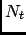
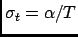

Next: Parameters
Up: Density Of States
Previous: Density Of States
Contents
Theory and implementation
nMOLDYN calculates the power spectrum of the VACF, which in case of the mass-weighted VACF defines the phonon
discrete DOS, (see Section 4.2.4.5) defined as:
 is the total number of time steps and
is the frequency step.
can
be computed either for the isotropic case or with respect to a user-defined axis. The spectrum
is computed from the
unnormalized VACF, such that DOS(0) gives an approximate value for the diffusion constant
(see Eqs. 4.21 and 4.22).
is smoothed by
applying a Gaussian window in the time domain [76] (see Section A). Its width in the time domain is
, where  is the length of
the simulation. We remark that the diffusion constant obtained from DOS is biased due to the spectral smoothing procedure since
the VACF is weighted by this window Gaussian function. nMOLDYN computes the density of states starting from both atomic velocities
and atomic coordinates. In this case the velocities are computed by numerical differentiation of the coordinate trajectories correcting
first for possible jumps due to periodic boundary conditions.
is the length of
the simulation. We remark that the diffusion constant obtained from DOS is biased due to the spectral smoothing procedure since
the VACF is weighted by this window Gaussian function. nMOLDYN computes the density of states starting from both atomic velocities
and atomic coordinates. In this case the velocities are computed by numerical differentiation of the coordinate trajectories correcting
first for possible jumps due to periodic boundary conditions.
Next: Parameters
Up: Density Of States
Previous: Density Of States
Contents
pellegrini eric
2009-10-06